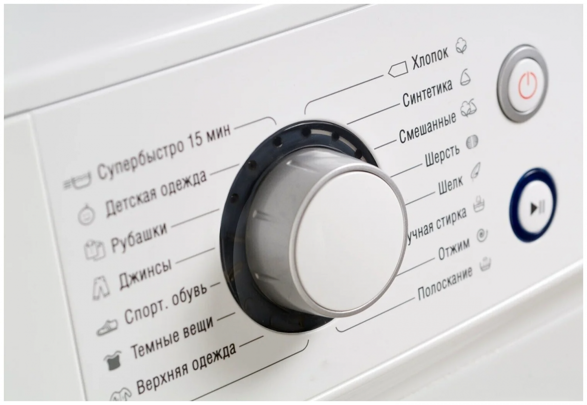
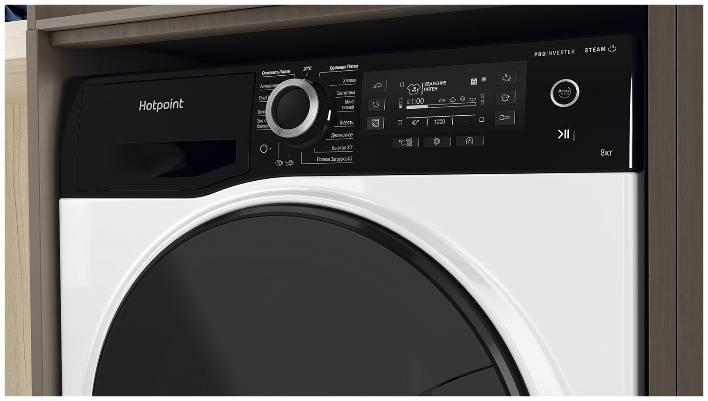

Ремонт стиральных машин в городе Барановичи, барановичском и близлежащих районах
Быстро, качественно, с гарантией
О мастере
Левкович Виктор Владимирович
Предоставляемые услуги
Ремонт, подключение стиральных машин автоматов: ARISTON, BOSCH, LG, SAMSUNG, INDESIT, АТЛАНТ и другие. Выезд в день вызова, без выходных. Гарантия. В наличии и под заказ запчасти к любым стиральным машинам (новые и б/у)
Локации работы
Город Барановичи, Барановичский, Ляховичский, Новогрудский районы. Чтобы договориться о ремонте машины в вашем районе, свяжитесь с мастером
Лицензии и сертификаты
УНП290110277. Есть лицензия 02467 от 30 07 2001 года. Услуга сертифицирована и есть в реестре бытовых услуг Республики Беларусь
Почему стоит выбрать данного мастера для ремонта стиральных машин в Барановичах
Опытный мастер с гарантией на работу
Более 20 лет опыта в ремонте стиральных машин различных марок.
Профессиональная диагностика
Точное определение проблемы с помощью современного оборудования.
Выезд на дом без дополнительной платы
Ремонт с выездом к вам на дом, экономим ваше время и силы.
Наличие запчастей
Имееются в наличии и под заказ запчасти для большинства популярных марок стиральных машин.
Работа без выходных
Готов помочь в любое время, включая выходные и праздничные дни. Выезд в день вызова.
Сертифицированный мастер
Есть лицензия на ремонт стиральных машин и сертификат на услуги.
Прейскурант услуг
Вызов и диагностика (в случае ремонта)
Диагностика (без ремонта)
Поиск и устранение течи (без запчастей)
Поломки: течет снизу машины, на полу вода
Замена амортизатора (1шт.)
Поломки: автомат стучит, гремит, трещит во время стирки
Замена двигателя
Поломки: машинка не включается, не запускается, не крутит барабан
Замена заливного клапана
Поломки: не набирается вода, медленно заливается вода в стиралку
Замена комплекта подшипников + сальник, суппорта
Поломки: гремит, стучит при отжиме, болтается барабан в стиральной машине
Замена конденсатора
Поломки: не работают программы, не включается
Замена термостата
Поломки: не греет, перегревает воду
Замена нагревательного элемента (ТЭН)
Поломки: не греет воду, выбивает автомат, не включается
Замена помехоподавляющего фильтра
Поломки: не включается, выключается при стирке
Замена реле уровня воды
Поломки: вода постоянно набирается
Замена ремня привода барабана
Поломки: не крутит барабан
Замена сетевого шнура
Поломки: искрит, не включается, пахнет горелым
Замена сливного насоса (помпа)
Поломки: не сливает воду, постоянно сливает воду
Замена температурного датчика (резистор)
Поломки: не греет, не работают программы
Замена устройства блокировки люка
Поломки: не закрывается люк, не работают программы, не открывается люк
Замена фильтра сливного насоса
Поломки: не сливает воду, плохо сливает
Замена циркуляционного насоса (помпа)
Поломки: вода остается в машинке, не сливает
Замена электронного модуля (плата управления)
Поломки: не работает панель управления, не включаются программы, не работают программы стирки
Извлечение инородного предмета (без разбора машины)
Поломки: гремит, хрустит или стучит при стирке
Извлечение инородного предмета (с разбором машины)
Поломки: гремит, хрустит или стучит при стирке
Ремонт электронного модуля
Поломки: не работает панель управления, не включаются программы, не работают программы стирки
Замена уплотнительной резины люка (манжета, гофра)
Поломки: вытекает вода, люк неплотно закрывается, запах в машине
Подключение стиральной машины
Ремонтируемые марки
Стиральные машины Bosch

Стиральные машины Samsung

Стиральные машины LG

Стиральные машины Indesit

Стиральные машины АТЛАНТ
Стиральные машины ARISTON
Ремонтируются также и другие марки - свяжитесь с мастером